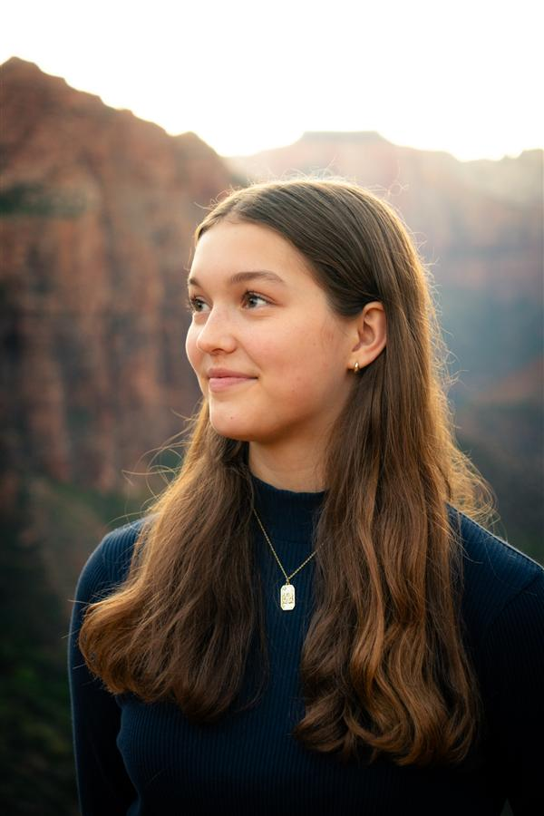
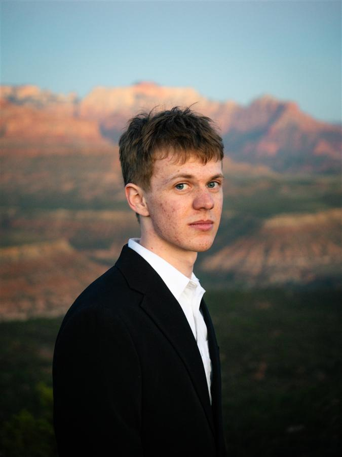

New writeups
CTF notes, OpenVAS scans, OSINT walkthroughs, Active Directory basics, and lab lessons.
Read the web logCybersecurity learner, IT technician, photographer, and home-lab note keeper based in Southern Utah.
CTF notes, OpenVAS scans, OSINT walkthroughs, Active Directory basics, and lab lessons.
Read the web logPortraits, couples, landscapes, and session information across Southern Utah and beyond.
Open photosHome lab, phishing analyzer, OSINT scripts, and experiments that are useful enough to keep.
View projectsExperience, skills, certifications, security projects, and a downloadable PDF version.
Open resume

Email is the best way to reach me. I work with individuals, families, creatives, and small businesses.
Send email